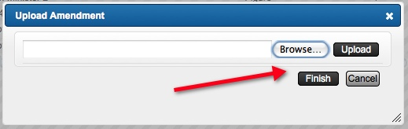

STEP 7: OBTAINING PERMISSION
7a. Sending Request
Now that a source has been entered, the status of the asset changes from No Source to Unrequested. To request permission, click “Get Permissions”.

The Get Permissions wizard will appear. There are three options available: Create a permissions request form to send, Create a purchase order, and Request was created outside the system.
Option 1: Chose this option if you assume there will not be an associated cost.
Option 2: Chose this option if you assume there will be an associated cost.
Option 3: Chose this option if you have already request permission.
After you chose the appropriate option, click Next.

The following dialogue box will ask you for which asset you are requesting permission. You have the option to choose a single asset, all unrequested assets, all assets in a particular component, or all assets for a single source, as shown below. The example below shows how you can request permission for more than one asset, however, the same instructions apply for requesting permission for a single asset. After you choose the assets you want to get permission for, click Next.
Note: If you need to change the type of permission you are requesting, click Previous.

The following dialogue box will ask you to enter in your return address, a note, and signature. The return address will be your address, the note allows you to include any relevant information, and the signature will be your name. After entering this information, click Next.

The final dialogue box will state the requirements of your request. These are the minimum requirements you set for the title when you first accessed the project landing page. Change the requirements as needed. Once you have the necessary requirements in place, click Generate.

Clicking Generate creates an internal purchase order, as well as a PDF to send to the source.

After you print or save the PDF, the status of the asset changes from Get Permissions to Form Sent.
7b. Received Request
Once you receive a response to your request, or a contract in regards to your request, click “Enter grant details” under Status. You will again be asked to choose the asset about which you are entering the details. The example below shows how you can enter details for multiple assets, however, the same process is used for entering details in for a single asset. After choosing the appropriate asset/s, click Enter Returned Form.

The next dialogue box will ask you to enter the details of the invoice or contract. Enter the invoice number if one is provided, the date (this will automatically default to the current date), the price of the asset, the start and end date the permission grant goes into effect (if permission is granted for lifetime, do not enter an end date) and if it is ten years later simply click "10 years from start date," and the number of copies the source requests. After you fill in this information, click Next.
Note: If you enter a value into the Comp Copies section and click "Add," your request is generated in comp copy, and your shipment will be scheduled and sent.

The following dialogue box asks if you would like to upload an agreement file and if there are any restrictions or conditions stipulated in the contract. To enter in the restrictions or conditions, select "Yes" and click Next.
Note: Make sure to upload all agreemtents to the system for accurate and complete records.

Next, you will be asked to enter in the terms of the contract. To do this, simply select the desired items and click Finish. If you initially selected more than one asset, you are able to enter in the terms simultaneously or individually. To enter in the common terms for multiple assets select "All Assets." The terms entered here are applicable to every asset initially selected.

To enter in terms for an individual asset, or terms that are only applicable to a single asset, click "Individual Assets." Select the desired asset, and fill-in the unique terms.

To enter in terms for the subsequent asset, deselect the first. After selecting the new desired asset, continue to fill-in the unique terms. Once you have completed entering in the terms, click Finish.

7c. Amendment Form
Clicking Finish takes you back to the project landing page where the status changes to Granted Limited, Granted Unlimited, or Amendment Needed, depending on the terms. If the source includes a print run limitation within the contract and Wiley does not have a master agreement with the source, then the Amendment Needed status will appear. The amendment needs to be signed by the source. To get the form, click Generate Form.

The Generate Amendment dialogue box will appear. Enter a note, if necessary, and click Generate.

The generated amendment will appear. You are able to download or email the amdendment, depending on your delivery preferences.

Once you have downloaded or emailed the form, the status will change to Amendment Sent.

When the form is returned, browse your files for the document, upload, and click Finish.

After the amendment form is returned and uploaded, the status will change to Granted Limited.

7d. Creating Payment Requests
Click “Pay” to generate a payment request.
The Payment Request wizard will appear. Three options are available: Generate Payment Request, Already paid by author on, and Already paid by Wiley on. If the payment was already made, chose the appropriate button, and click “Finish”. If the payment has not already been made, choose Generate Payment Request. In order to generate your request, enter in the cost center and account number, and then click “Finish”.

Your payment request will be generated in Excel.

After your payment request has been sent, the status will no longer show the “Pay” link.

Congratulations! You have successfully completed entering an asset into the permissions system.